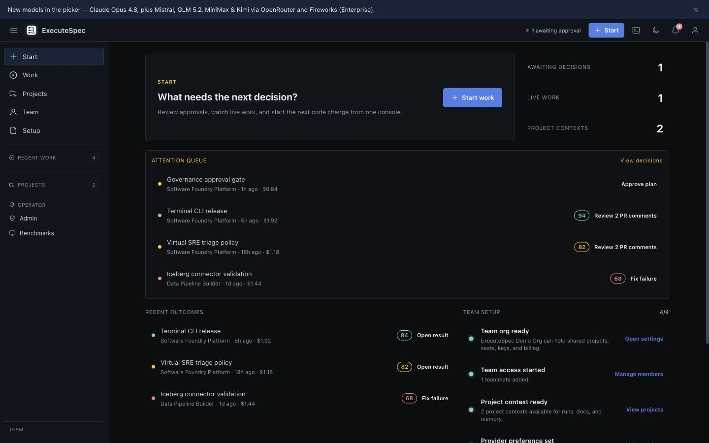
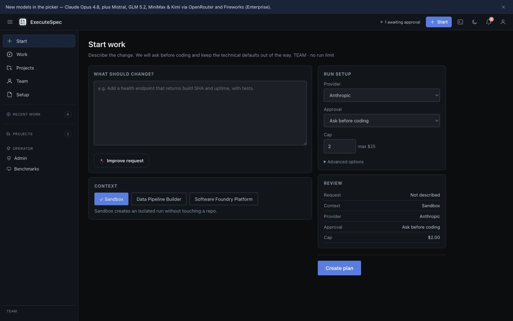
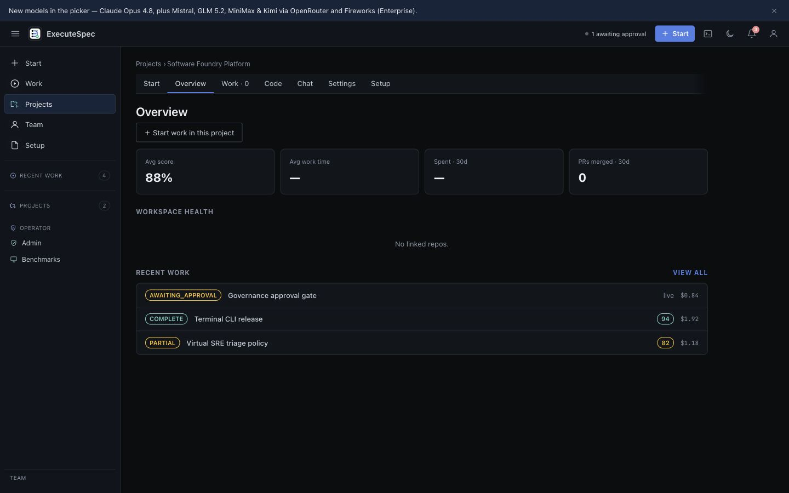
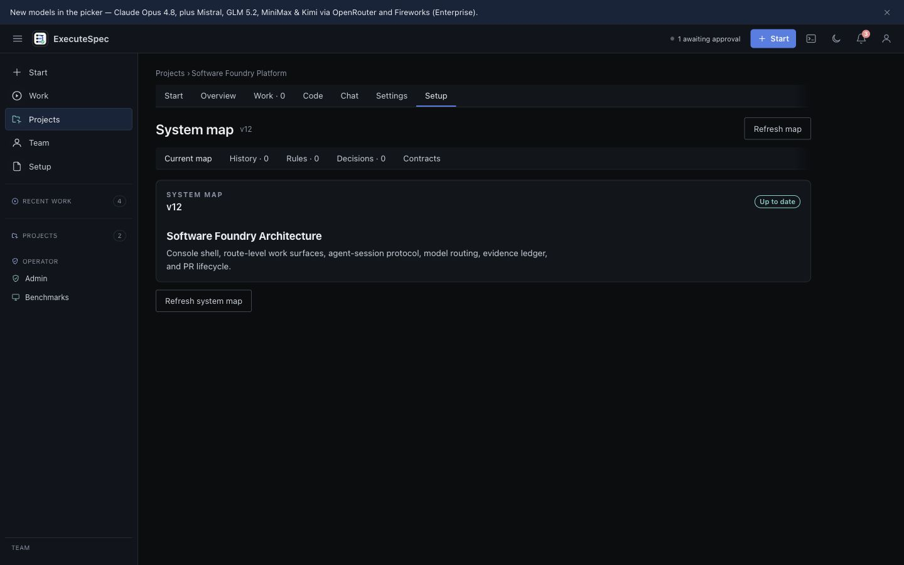
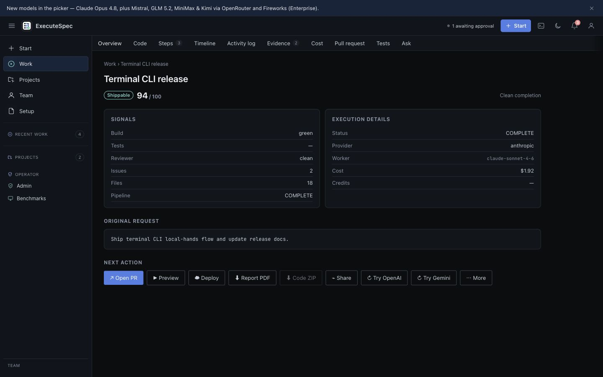
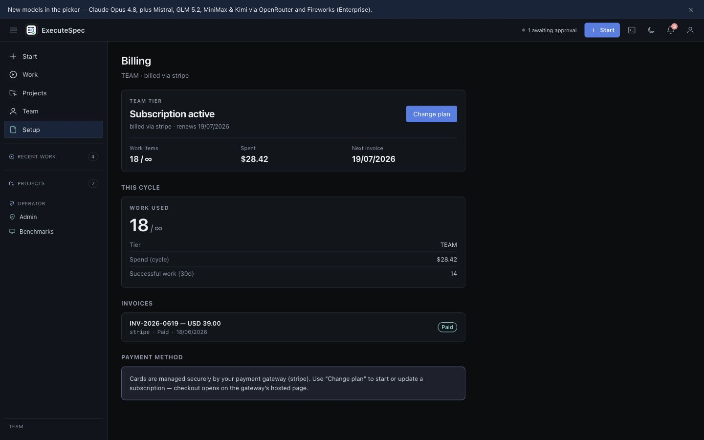
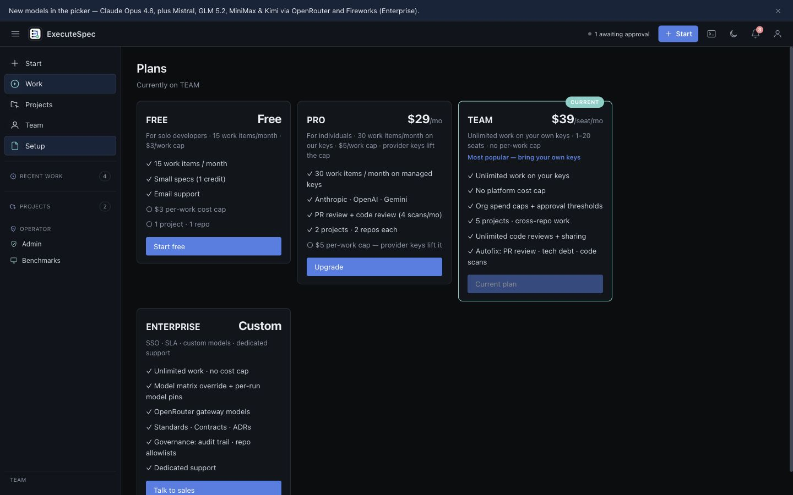

Spec-to-PR core today. Terminal CLI released. Roadmap expands into DevOps governance, Virtual SRE, and data pipeline workflows.

The buyer does not need another code suggestion surface. They need reviewable, cost-visible, governed output.
Diffs still arrive without enough evidence for reviewers to merge confidently.
Autonomy burns tokens before teams understand plan, scope, or cap.
Multi-repo work needs docs, memory, architecture, and policy in one loop.
A model self-rating is not a team acceptance signal.
ExecuteSpec is an async control plane for bounded engineering work, not an IDE reskin.
Natural language requirement.
Tasks plus cost estimate.
Human gate before spend.
Controlled tools change code.
Build, tests, reviewer evidence.
Reviewable output with score.
The protected app is the current Console shell; route-level surfaces own work, projects, billing, org settings, benchmark tracking, and run evidence.

The strategic advantage is shared context and governance, not four disconnected products.
Verified PRs with plan, cost, tool traces, build/test/reviewer evidence.
Terraform, Docker, deployment workflows, drift, policy, and guarded terminal/web operations.
Observe, triage, raise issues, and route remediation into reviewable PRs.
ETL/ELT across SQL, NoSQL, warehouses, lakehouses, HDFS, Iceberg, Databricks, Snowflake, and unstructured sources.
Project views carry recent work, architecture/system map, repo setup, code/docs context, and governance surfaces.


Run result carries score, signals, execution details, next actions, and PR handoff. This is the trust layer for reviewers.

Current pricing keeps evaluation simple while making Team and Enterprise the margin-safe path.
| Tier | Price | Commercial role |
|---|---|---|
| Free | $0 | 200 AI credits/month on native DeepSeek for evaluation and activation. |
| Pro | $20/month | 2,000 managed AI credits; solo conversion; all default models. |
| Pro+ | $100/month | Hidden high-usage managed-credit upsell with 125,000 AI credits. |
| BYOK | $50/month | Single-person own-key org; model matrix; no provider markup. |
| Team | $50/seat/month | BYOK from two seats; primary self-serve revenue path. |
| Enterprise | Custom | Contract, DPA/SLA path, org model controls, provider lanes. |
The website and deck should describe the same ladder the app renders: Free, Pro, hidden Pro+, BYOK, Team, Enterprise.


Spec-to-plan-to-PR core, terminal CLI released, billing ladder, BYOK, validation evidence.
Benchmark numbers, payment sandbox proof, enterprise compliance, tenant isolation.
SOC 2 certified, official leaderboard rank, unlimited managed runs, fully autonomous merge.
Teams already using AI coding tools but still requiring human PR review. Sell verified throughput and cost control, not engineer replacement.
Core + CLI → DevOps/Governance → Virtual SRE → Data Pipeline Builder. The first expansion should be adjacent to today's tool/runtime/PR lifecycle.
Benchmark-led, enterprise-pilot-led, developer-launch-led, or software-foundry thesis?
Keep current ladder or move toward platform fee plus customer provider spend?
Lead with DevOps/Governance, Virtual SRE, or Data Pipeline Builder after Core + CLI?
Screenshots are current Console-era product-demo captures from `website/press-kit/current/`; demo data is synthetic and not customer traction.